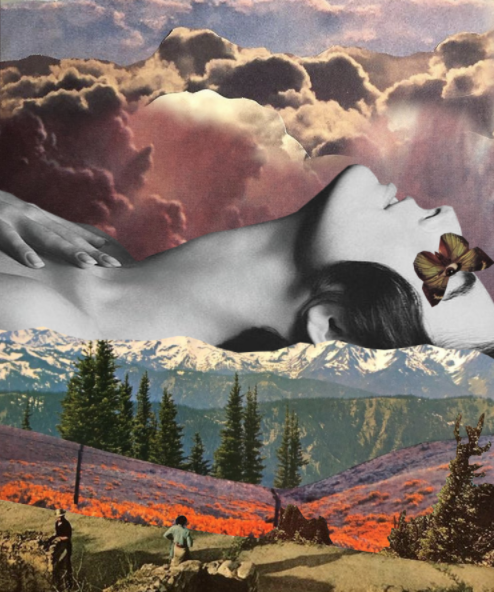

Envision Beauty in Nature
For my final project for Art74, I used a variety of softwares to make singular compositions and then used videography to blend them all together, having it stand out from my other work. With my knowledge throughout the course of the semester, I will attempt to emulate what I have learned thus far to create something striking, eye-catching, and a little different in my final project.
As the first step, I created a collage regarding around a particular aesthetic to establish a creative atmosphere using photoshop to put it together, similar to the Digital Image Manipulation assignment. For the second step, I created around five individual glitched stills using Audacity, providing a variation of different types of glitches. For the third step, I blended the original collage with the glitched Audacity images using glitch transitions in After Effects along with flashing colors and music as the background. For the last step, I linked my content to my HTML Web Portfolio and have six individual stills to look at (original collage & five glitched images) and the video itself separately.
Down Below are a few of the glitched stills made using Audacity


I wanted my project to reflect my knowledge over the course of this semester, but also take what I know I am good at and use the benefits of that. I wanted my final piece to be something people can look at and have it stand-out from my other pieces of work. To see and try something new was my ultimate goal for the final. I want people to be able to look at the piece and try and study what is on it and why, making it more intriguing.